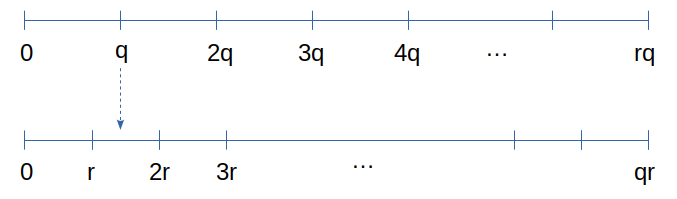

量子计算会终结现在的密码体系吗？(5.2) Shor算法详解
Ping Zhou, 2021-05-31
前文『5.1 Shor算法详解』讨论了在简化条件下，QFT如何提取函数周期信息，但是如果简化条件不满足呢？今天接着这个话题继续讨论。推导过程较长，涉及的知识点也比较多，我会根据我的学习经验，尽可能写的简明易懂。
回顾：简化条件
在前文中，我们构造周期函数 \(f(x)\) 的可逆变换 \(U_f\) ，给它制备适当的输入：

在输出端测量 \(|\beta\rangle\) ，使得它坍缩到某个值z，这时 \(\alpha\) 就会坍缩到 \(|l\rangle, |l+r\rangle, |l+2r\rangle, \dots, |l+Ar\rangle\) 的叠加态：
\begin{matrix} |\alpha\rangle = \frac{1}{\sqrt{A+1}} \sum_{j=0}^{A}|jr+l\rangle \end{matrix}其中\(l\) 称为offset，是满足 \(a^l \mod N = z\) 的最小整数。假设 \(|\alpha\rangle\) 有n个量子位，那么A就是在0到 \(2^n-1\) 之间有多少个周期。
接下来的关键一步，是对 \(|\alpha\rangle\) 作量子傅立叶变换，从中提取函数周期信息。
在前文中，我们假设了一个简化条件，即 \(q=2^n\) 能被函数周期 \(r\) 整除。【注：这里勘误一下，前文中把简化条件写成了“ \(2^n-1\) 能被 \(r\) 整除”，这是笔误】
在这个简化条件下， \(|\alpha\rangle\) 经过量子傅里叶变换(QFT)后再测量，会得到某个值 \(y=k\frac{q}{r}\) ，而这个y值与 \(q=2^n\) 之间的比值，等于某个整数k与周期r的比值，即 \(\frac{y}{q} = \frac{k}{r}\) 。这里y和q都是已知的，化简后得到的分数，其分母就是可能的 \(r\) 值。
那么，如果这个简化条件不成立呢？
简化条件不成立？
还是从QFT前的状态开始推导，QFT的作用是什么？
和前文一样，我们知道把QFT作用在任意态 \(|\psi\rangle\) 上：
\begin{matrix} |\psi\rangle = \sum_{x=0}^{q-1}f(x)|x\rangle & (q=2^n) \\\ \end{matrix}在输出端会得到一个新状态：
\begin{matrix} |\tilde\psi\rangle = QFT|\psi\rangle = \sum_{y=0}^{q-1}\tilde f(y)|y\rangle, \\\ \tilde f(y) = \frac{1}{\sqrt{q}} \sum_{x=0}^{q-1} \omega^{xy} f(x) \end{matrix}同样，我们知道除了 \(|l\rangle, |l+r\rangle, |l+2r\rangle, \dots, |l+Ar\rangle\) 外，其他的分量都是0:
\begin{matrix} f(x) = \left\{ \begin{array}{ll} \frac{1}{\sqrt{A+1}} & x \in \{l, l+r, \dots, l+Ar \} \\ 0 & otherwise \\ \end{array} \right. \end{matrix}代入上面的QFT式子：
\begin{matrix} \tilde f(y) = \frac{1}{\sqrt{q}} \sum_{j=0}^{q-1} \omega^{xy} f(x) \\\ = \frac{1}{\sqrt{q}} \sum_{j=0}^{A} \frac{1}{\sqrt{A+1}} e^{2\pi i (jr+l)y/q} \\\ = \frac{1}{\sqrt{q(A+1)}} e^{2\pi ily/q} \sum_{j=0}^{A} e^{2\pi ijry/q} \\\ \end{matrix}接下来，令 \(\theta = 2\pi \frac{ry \mod q}{q}\) ，为什么要这么搞呢？
我们考虑一下e的指数性质就知道了： \(e^{2\pi i z} = 1\) 对任意整数z都成立，所以我们对e的指数，其实只用关心它的小数部分！
那么 \(ry/q\) 这个分数，也可以分解成整数部分和小数部分，而它的小数部分，就是 \(\frac{ry \mod q}{q}\) 对不对？
所以我们令 \(\theta = 2\pi \frac{ry \mod q}{q}\) 的话：
\begin{matrix} e^{2\pi i ry/q} \\\ = e^{2\pi i (ry \mod q)/q} = e^{i \theta} \end{matrix}代入到前面的求和项里：
\begin{matrix} \sum_{j=0}^{A} e^{2\pi ijry/q} = \sum_{j=0}^{A} e^{i j \theta} \end{matrix}再用几何级数性质：
\begin{matrix} \sum_{j=0}^{A} e^{i j \theta} = \frac{e^{i(A+1)\theta}-1}{e^{i\theta}-1} \end{matrix}算一下这个东西的模：
\begin{matrix} \vert \frac{e^{i(A+1)\theta}-1}{e^{i\theta}-1} \vert^2 = \frac{\vert e^{i(A+1)\theta}-1 \vert^2}{\vert e^{i\theta}-1 \vert^2} \\\ = \frac{\vert \cos(A+1)\theta + i\sin(A+1)\theta - 1\vert^2}{\vert \cos\theta + isin\theta -1 \vert^2} \\\ = \frac{ (\sin\frac{A+1}{2}\theta)^2 }{ (\sin\frac{\theta}{2})^2 } \end{matrix}这里用到了三角函数里的公式：
\begin{matrix} \cos2\alpha = 1-2\sin^2\alpha \\ \cos^2\alpha + \sin^2\alpha=1 \end{matrix}为什么要费老大劲算这个呢？等会儿我们会看到，先让我喘口气 :-)
喘口气接着讲
我们画两条从0到rq的数轴，然后在上面分别标上 \(q,2q,\dots,rq\) ，以及 \(r,2r,\dots,qr\) ：

从图上可以看出，在第一条数轴上，必然存在某些小于r的整数n，使得 \(nq\) 落在第二条数轴的前后两个点 \(kr, (k+1)r\) 之间（例如图中 q 落在 r 和 2r 中间）。因此 \(kr, (k+1)r\) 这两个数，至少有一个与 \(nq\) 的距离小于等于 \(r/2\) 。
换句话说，在 0 到 q-1 之间必然存在某些整数y，使得 \(ry\) 与最近的 \(q\) 倍数之间的距离小于等于 \(r/2\) ，用数学语言写出来就是：
\begin{matrix} \vert ry \mod q \vert \le r/2 & (\text{for some y}) \\ \end{matrix}假设与 \(ry\) 最近的 \(q\) 倍数是 \(kq\) ，这个不等式就是说：
\begin{matrix} \vert ry - kq \vert \le \frac{r}{2} \\ \end{matrix}（y是0到q-1之间的整数，而k是0到r-1之间的整数）
这个不等式，两边除以 \(rq\) ，会变成啥？
\begin{matrix} \vert ry - kq \vert \le \frac{r}{2} \Rightarrow \vert \frac{y}{q} - \frac{k}{r} \vert \le \frac{1}{2q} \end{matrix}还记得讨论简化条件的情况吗？如果简化条件成立，我们测量得到一个0到q-1之间的一个数y，它和q的比值就是某个整数k和r的比值：\(\frac{y}{q} = \frac{k}{r}\)
简化条件不成立的话，上面这个不等式告诉我们：测量的所有可能结果中，必然存在某些y，它和q的比值『非常接近』某个整数k与r的比值！接近到什么程度呢？误差小于 \(\frac{1}{2q}\) ！别忘了 \(q=2^n\) ，因此我们使用的量子位数量越多，误差就越小。利用连分数算法，我们可以从 \(y/q\) 推出和它接近的分数 \(\frac{k}{r}\) ，而这里的 r 就是可能的函数周期。
但是还有个问题，测量结果y可能是0到q-1中的任何一个，虽然我们知道其中必然有满足这个不等式的值，但得到这样的y值的概率有多大呢？这直接决定了我们可能需要重复运行Shor算法多少次！
回到QFT的输出状态：
\begin{matrix} |\tilde\psi\rangle = QFT|\psi\rangle = \sum_{y=0}^{q-1}\tilde f(y)|y\rangle, \\\ \tilde f(y) = \frac{1}{\sqrt{q}} \sum_{x=0}^{q-1} \omega^{xy} f(x) \end{matrix}这是一个 \(|0\rangle, \dots, |q-1\rangle\) 的叠加态，测量得到某个y值的概率，是由 \(|y\rangle\) 的分量 \(\tilde f(y)\) 决定的，也就是它的模 \(|\tilde f(y)|^2\) 。
现在明白为什么我们前面去算它的模了吧！
算一下概率
假如某个y值满足我们要的不等式 \(|ry - kq| \le r/2\) ，我们有多大概率测量得到它？这其实是问， \(|y\rangle\) 对应的分量 \(\tilde f(y)\) 的模 \(|\tilde f(y)|^2\) 有多大？我们来算一下。
根据前面的推导：
\begin{matrix} \tilde f(y) = \frac{1}{\sqrt{q}} \sum_{x=0}^{q-1} \omega^{xy} f(x) \\ = \frac{1}{\sqrt{q(A+1)}} e^{2\pi ily/q} \sum_{j=0}^{A} e^{2\pi ijry/q} \\ \end{matrix}因此：
\begin{matrix} \vert \tilde f(y) \vert^2 = \frac{1}{q(A+1)} \cdot 1 \cdot \vert \sum_{j=0}^{A} e^{2\pi ijry/q} \vert^2 \end{matrix}最右边这个求和，之前我们已经推导过了：
\begin{matrix} \sum_{j=0}^{A} e^{2\pi ijry/q} = \sum_{j=0}^{A} e^{i j \theta} = \frac{e^{i(A+1)\theta}-1}{e^{i\theta}-1} \\ (\theta = 2\pi \frac{ry \mod q}{q}) \\ \end{matrix}而它的模我们之前也已经算出来了：
\begin{matrix} \vert \frac{e^{i(A+1)\theta}-1}{e^{i\theta}-1} \vert^2 = \frac{ (\sin\frac{A+1}{2}\theta)^2 }{ (\sin\frac{\theta}{2})^2 } \end{matrix}把它代入到 \(\tilde f(y)\) 的模里：
\begin{matrix} \vert \tilde f(y) \vert^2 = \frac{1}{q(A+1)} \cdot 1 \cdot \frac{ (\sin\frac{A+1}{2}\theta)^2 }{ (\sin\frac{\theta}{2})^2 } \end{matrix}这里面 \(\theta = 2\pi \frac{ry \mod q}{q}\) ，而我们要讨论的y，满足不等式 \(|ry \mod q| \le r/2\) ， 因此：
\begin{matrix} \vert \theta \vert \le \frac{\pi r}{q} \end{matrix}因此：
\begin{matrix} \frac{A+1}{2} \vert \theta \vert \le \frac{q}{2r} \frac{\pi r}{q} = \frac{\pi}{2} \end{matrix}【注】这里的推导是参考李承祖等著的《量子计算机研究》课本，但这一步我有点疑问，因为它需要保证 \(A+1 \le \frac{q}{r}\) ，而单凭A的定义（A是小于 \((q-1)/r\) 的最大整数），似乎无法直接保证这一点，为此 我做了一个补充证明 来完善这个推导。考虑到篇幅，这个补充证明我会作为单独的一篇，贴在我以后的公众号文章以及我的个人网站里，如果你有兴趣可以关注一下。
如果我们令 \(\alpha = \frac{A+1}{2} \vert \theta \vert\) ，那么上面这个不等式就变成了：
\begin{matrix} \alpha \le \frac{\pi}{2} & (\alpha = \frac{A+1}{2} \vert \theta \vert) \\ \end{matrix}所以， \(\alpha\) 是一个0到 \(\pi/2\) 的值，同时不难证明， \(\sin \alpha \ge 2\alpha / \pi\) ，这一点我们画个图就能看出来：
- 三角函数 \(y=\sin \alpha\) ，横坐标 \(\alpha\) 从0到 \(\pi/2\) ，纵坐标从0到1
- 线性函数 \(y=2\alpha/\pi\) ，其实就是坐标(0, 0)到(\(\pi/2\), 1)的一条直线

显然，在0到 \(\pi /2\) 这个范围内，始终有 \(\sin \alpha \ge 2\alpha / \pi\) ，而 \(\alpha=\frac{A+1}{2} | \theta |\) ，所以：
\begin{matrix} \sin \frac{A+1}{2} |\theta| \ge \frac{2}{\pi} \frac{A+1}{2}|\theta| = \frac{A+1}{\pi}|\theta| \end{matrix}用类似的作图方法，可以证明在0到 \(2\pi\) 范围内， \(\sin \frac{\theta}{2} \le \frac{\theta}{2}\) ：
把上面这个两个结果用到 \(\tilde f(y)\) 的模里：
\begin{matrix} \vert \tilde f(y) \vert^2 = \frac{1}{q(A+1)} \left[ \frac{ (\sin\frac{A+1}{2}\theta)^2 }{ (\sin\frac{\theta}{2})^2 } \right] \end{matrix}右边方括号里，分子部分我们前面已经知道这个不等式：
\begin{matrix} \sin \frac{A+1}{2} |\theta| \ge = \frac{A+1}{\pi}|\theta| \end{matrix}因此：
\begin{matrix} (\sin \frac{A+1}{2} |\theta|)^2 \ge = (\frac{A+1}{\pi}|\theta|)^2 \end{matrix}再看方括号的分母部分，前面同样已知 \(\sin \frac{\theta}{2} \le \frac{\theta}{2}\) ，所以：
\begin{matrix} (\sin \frac{\theta}{2})^2 \le (\frac{\theta}{2})^2 \end{matrix}分子大于某个值，分母又小于某个值，两者合起来，我们就可以推出：
\begin{matrix} \left[ \frac{ (\sin\frac{A+1}{2}\theta)^2 }{ (\sin\frac{\theta}{2})^2 } \right] \ge \frac{(\frac{A+1}{\pi}|\theta|)^2}{(\frac{\theta}{2})^2} = \\ \frac{4}{\pi^2} (A+1)^2 \end{matrix}代入到前面的 \(|\tilde f(y)|^2\) 里：
\begin{matrix} \vert \tilde f(y) \vert^2 = \frac{1}{q(A+1)} \left[ \frac{ (\sin\frac{A+1}{2}\theta)^2 }{ (\sin\frac{\theta}{2})^2 } \right] \\ \ge \frac{1}{q(A+1)} \frac{4}{\pi^2} (A+1)^2 = \frac{4}{\pi^2} \frac{A+1}{q} \end{matrix}因为A是 \(\frac{q-1}{r}\) 内的最大整数，因此， \(Ar\) 是小于q的最大的r倍数， \((A+1)r \gt q\) ：
简单的变换就可以推出：
\begin{matrix} (A+1)r \gt q \Rightarrow \frac{A+1}{q} \gt \frac{1}{r} \end{matrix}因此 \(|\tilde f(y)|^2\) 可以进一步推出：
\begin{matrix} \vert \tilde f(y) \vert^2 \ge \frac{4}{\pi^2} \frac{A+1}{q} \ge \frac{4}{\pi^2}\frac{1}{r} \end{matrix}总结一下，这个结果告诉我们：
我们对QFT后的状态进行测量，得到一个满足 \(\vert \frac{y}{q} - \frac{k}{r} \vert \le \frac{1}{2q}\) 的y值，其概率不低于 \(\frac{4}{\pi^2r}\) 。
然后，通过连分数算法可以求出某个k与r的比值，而如果 \(k,r\) 还互质，那么 \(r\) 就是我们要找的函数周期。数论告诉我们，k与r互质的可能性大于 \(\frac{1}{\log r}\) 。因此，成功找到r值（也就是成功找到N的因子）的概率不低于 \(\frac{4}{\pi^2 \log N}\) 。换句话说，我们重复 \(O(\log N)\) 次这个算法，就能以任意高的成功概率找到N的因子。 【注：这一段概率的推导也是参考李承祖的课本，但我还没怎么搞懂，欢迎各位高手指教 :-) 】
Shor算法简化条件不成立的情况，总算推导完了！